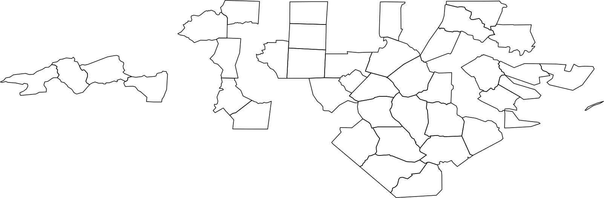

library(DBI)
library(duckdb)
library(sf)
library(dplyr)
conn <- dbConnect(duckdb())9 Spatial databases
9.1 Create a connection to DuckDB
9.2 File Path and Database Setup
Here, the code retrieves the file path of a sample GeoPackage file included with the sf package. It also installs and loads the necessary extensions (httpfs and spatial) in DuckDB to handle spatial data.
file <- system.file("gpkg/nc.gpkg", package = "sf")
dbExecute(conn, "INSTALL httpfs; LOAD httpfs; INSTALL spatial; LOAD spatial")[1] 09.3 Creating a Table with Spatial Data
This section constructs a SQL query to create a table (mytable) from the GeoPackage file. It reads the spatial data and converts the geometry column to Well-Known Binary (WKB) format. The query is then executed with the file path bound as a parameter.
query <-
"
CREATE OR REPLACE TABLE mytable AS
SELECT
*,
ST_asWKB (geom) AS geom2
FROM
ST_Read (?)
"
stmt <- dbSendStatement(conn, query, params = list(file))
dbGetRowsAffected(stmt)[1] 100dbClearResult(stmt)9.4 Describing the Table
This part describes the structure of the newly created table and lists all tables in the database.
dbSendQuery(conn, "DESCRIBE mytable;") |>
dbFetch()| column_name | column_type | null | key | default | extra |
|---|---|---|---|---|---|
| AREA | DOUBLE | YES | NA | NA | NA |
| PERIMETER | DOUBLE | YES | NA | NA | NA |
| CNTY_ | DOUBLE | YES | NA | NA | NA |
| CNTY_ID | DOUBLE | YES | NA | NA | NA |
| NAME | VARCHAR | YES | NA | NA | NA |
| FIPS | VARCHAR | YES | NA | NA | NA |
| FIPSNO | DOUBLE | YES | NA | NA | NA |
| CRESS_ID | INTEGER | YES | NA | NA | NA |
| BIR74 | DOUBLE | YES | NA | NA | NA |
| SID74 | DOUBLE | YES | NA | NA | NA |
| NWBIR74 | DOUBLE | YES | NA | NA | NA |
| BIR79 | DOUBLE | YES | NA | NA | NA |
| SID79 | DOUBLE | YES | NA | NA | NA |
| NWBIR79 | DOUBLE | YES | NA | NA | NA |
| geom | GEOMETRY | YES | NA | NA | NA |
| geom2 | WKB_BLOB | YES | NA | NA | NA |
dbSendQuery(
conn,
"FROM (SUMMARIZE mytable) AS summarized_table WHERE NOT regexp_matches(column_name,'geom')"
) |>
dbFetch()| column_name | column_type | min | max | approx_unique | avg | std | q25 | q50 | q75 | count | null_percentage |
|---|---|---|---|---|---|---|---|---|---|---|---|
| AREA | DOUBLE | 0.042 | 0.241 | 86 | 0.12626000000000004 | 0.04920019298639987 | 0.091 | 0.1205 | 0.1545 | 100 | 0 |
| PERIMETER | DOUBLE | 0.999 | 3.64 | 92 | 1.6729600000000004 | 0.4823126510193709 | 1.323 | 1.6085 | 1.863 | 100 | 0 |
| CNTY_ | DOUBLE | 1825.0 | 2241.0 | 112 | 1985.96 | 106.51664829328959 | 1901.5 | 1982.0 | 2067.5 | 100 | 0 |
| CNTY_ID | DOUBLE | 1825.0 | 2241.0 | 112 | 1985.96 | 106.51664829328959 | 1901.5 | 1982.0 | 2067.5 | 100 | 0 |
| NAME | VARCHAR | Alamance | Yancey | 105 | NA | NA | NA | NA | NA | 100 | 0 |
| FIPS | VARCHAR | 37001 | 37199 | 83 | NA | NA | NA | NA | NA | 100 | 0 |
| FIPSNO | DOUBLE | 37001.0 | 37199.0 | 100 | 37100.0 | 58.022983951764346 | 37050.0 | 37100.0 | 37150.0 | 100 | 0 |
| CRESS_ID | INTEGER | 1 | 100 | 96 | 50.5 | 29.011491975882013 | 26 | 50 | 76 | 100 | 0 |
| BIR74 | DOUBLE | 248.0 | 21588.0 | 101 | 3299.62 | 3848.1651269196336 | 1063.0 | 2180.5 | 3957.0 | 100 | 0 |
| SID74 | DOUBLE | 0.0 | 44.0 | 24 | 6.67 | 7.781167371067509 | 2.0 | 4.0 | 8.5 | 100 | 0 |
| NWBIR74 | DOUBLE | 1.0 | 8027.0 | 96 | 1050.81 | 1432.9117399353129 | 180.0 | 697.5 | 1172.0 | 100 | 0 |
| BIR79 | DOUBLE | 319.0 | 30757.0 | 98 | 4223.92 | 5179.458159095233 | 1308.5 | 2636.0 | 4989.0 | 100 | 0 |
| SID79 | DOUBLE | 0.0 | 57.0 | 29 | 8.36 | 9.431860898041274 | 2.0 | 5.0 | 10.5 | 100 | 0 |
| NWBIR79 | DOUBLE | 3.0 | 11631.0 | 101 | 1352.81 | 1975.9987511497711 | 241.0 | 874.5 | 1416.5 | 100 | 0 |
9.5 Reading and Converting Spatial Data
Here, the code reads the spatial data from the mytable table, specifying the geometry column (geom2). The result is converted to a tibble and then to an sf object for spatial data manipulation.
res <- st_read(
conn,
query =
"
SELECT
*
FROM
mytable;
",
geometry_column = "geom2"
) |>
st_as_sf() |>
select(-geom) |>
head()9.6 Filtering and Plotting Spatial Data
Filter the spatial data based on intersection with a specific point.
tbl(conn, "mytable") |>
filter(ST_Intersects(geom, "SRID=4326;POINT (-81.5 36.43)")) |>
select(-contains("geom"))| AREA | PERIMETER | CNTY_ | CNTY_ID | NAME | FIPS | FIPSNO | CRESS_ID | BIR74 | SID74 | NWBIR74 | BIR79 | SID79 | NWBIR79 |
|---|---|---|---|---|---|---|---|---|---|---|---|---|---|
| 0.114 | 1.442 | 1825 | 1825 | Ashe | 37009 | 37009 | 5 | 1091 | 1 | 10 | 1364 | 0 | 19 |
9.7 Filter by Area and Plot
Filter the spatial data based on area greater than 0.14 and plot the results.
res <- tbl(conn, "mytable") |>
filter(ST_Area(geom) > 0.14) |>
collect() |>
st_as_sf()wkbType: 67108864plot(st_geometry(res), lwd = 0.5)